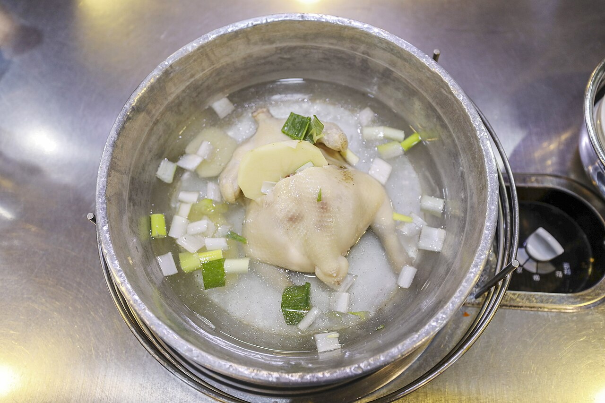
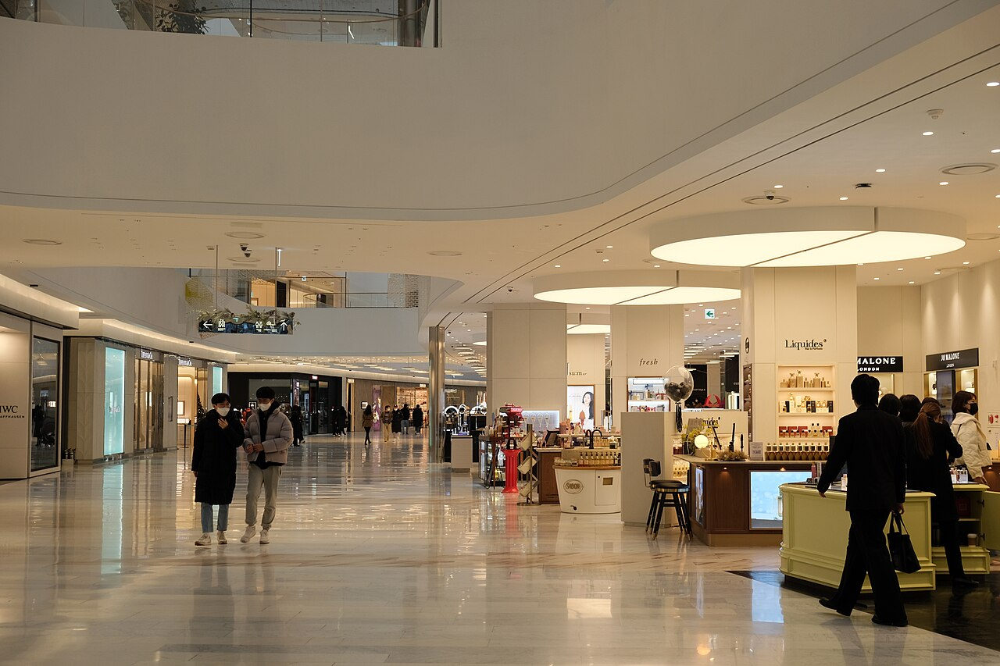
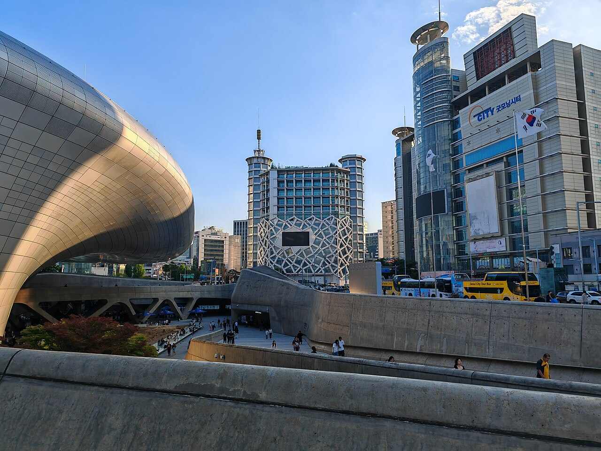
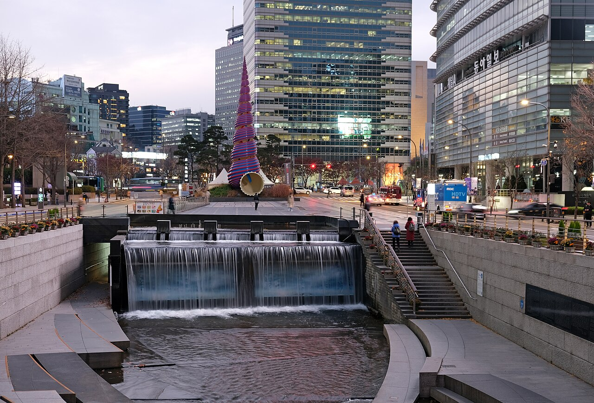

Seoul · Day 4 · 走機日 finale
D426 JUN 五
安國朝 · 明洞午 · 東大門夜
🆕 為咗 London Bagel，安國段搬上朝早：bagel → 仁寺洞工藝 → 안녕인사동特色店 → 韓屋 café，再落明洞午餐、黃昏東大門 finale。梅雨走機日，全程室內/有蓋為主。
本次更新
🆕 加 安國/익선동段（朝早）：London Bagel 安國 + 仁寺洞 Ssamziegil + 안녕인사동 + 冬柏 café。換走明洞貓café。⚠ 南大門朝市 trade 走咗（一個朝早做唔晒安國+南大門兩邊）—— 手信改現代 Outlet 退稅 + 便利店補；想保留南大門就一句話我反返轉。
走機 deadline
20:30 前返酒店攞行李、21:00 前離酒店 → van 直去 ICN（或的士去首爾站搭 22:40 尾班 AREX 直通）→ 趕 CX427 01:55。下午 14:00–18:00 有 buffer：抖、執行李、或補明洞掃貨。
⭐ 必逛購物
媽媽：쌈지길（手作飾物）、NYUNYU（平價飾物海量）、現代 Outlet（韓纖折扣女裝＋退稅）、Olive Young 명동（藥妝旗艦）
仔：안녕인사동（KPOP＋character）、NOON SQUARE SPAO（性價比男裝）、POP MART 명동（Labubu 盲盒）、Doota（男裝開到午夜）
全家：Daiso 명동 12 層（雜貨手信）、안녕인사동 Color Pool（打卡）、DDP Design Store（首爾文創）
🔸 獨特：통인가게（百年螺鈿工藝）、KCDF（官方匠人選品）、익선동 OBLESS／BLUE ELEPHANT（韓屋香氛飾物）
仔：안녕인사동（KPOP＋character）、NOON SQUARE SPAO（性價比男裝）、POP MART 명동（Labubu 盲盒）、Doota（男裝開到午夜）
全家：Daiso 명동 12 層（雜貨手信）、안녕인사동 Color Pool（打卡）、DDP Design Store（首爾文創）
🔸 獨特：통인가게（百年螺鈿工藝）、KCDF（官方匠人選品）、익선동 OBLESS／BLUE ELEPHANT（韓屋香氛飾物）
🆕 安國 / 益善洞 / 仁寺洞 朝早文化特色段 08:00–13:00 · 近酒店 3 站
1
早餐
08:00
08:00
bagel
London Bagel Museum 安國 본점 런던베이글뮤지엄 안국
全韓最紅 bagel·韓屋風本店，招牌 spring onion cream cheese。排隊長達 2 鐘 → 唯一玩法：07:30 到場攞號（08:00 開門）或直接外帶；落晝（remote register 09:00 開、截 13:00）必摸門釘，所以擺朝早第一站。
價 bagel+spread ₩5,000–10,000時間 08:00–18:00址 Bukchon-ro 4-gil 20
Tip07:30 攞號 / 外帶最快；本身室內店，落雨照
2
10:30
新增
仁寺洞 Ssamziegil 쌈지길 工藝 쌈지길
四層螺旋商街、50+ 本地工藝 gallery 與手作：軟陶、鎖匙扣、傳統紙藝、DIY 小物 —— 媽媽手工藝主場，亦有手信。安國站 6 出口 292 米。
時間 10:30–20:30 每日步行 bagel → 仁寺洞 8 分tag 媽媽手工藝
Rain螺旋商街半室內、各舖室內，雨天照行
3
11:30
特色店
안녕인사동 Annyeong Insadong 안녕인사동
仁寺洞綜合館一棟搞掂：소품샵／ArtBox character 文具、GS25 robot café、Color Pool Museum 打卡 —— 媽媽手作＋仔 character＋落雨備案三合一。인사동길 49。
時間 約 10:30–22:00 到場 Naver 核「영업 중」步行 仁寺洞旁tag 仔 character + 媽媽
Rain整棟室內，梅雨主備案
4
12:15
café
冬柏洋菓子店 益善洞 동백양과자점
韓屋木質裝潢、開放廚房睇住整舒芙蕾班戟，鬆軟入口即化 —— 안국段嘅韓屋 café 抖腳位（全家）。Supyo-ro 28-gil 17-24。
時間 09:00–22:00（LO 21:30）價 舒芙蕾/咖啡 ₩8,000 起步行 仁寺洞 → 益善洞 5 分
後備Onion 安國（어니언 안국·平日 07–22·韓屋麵包店·安國站 3 出口）二揀一
明洞 午餐 13:30 · 米芝蓮刀削麵
5
午餐
13:30
13:30
必到
明洞餃子 本店 명동교자 본점
米芝蓮必比登老字號，雞湯底刀削麵濃稠不辣，夏季限定豆漿冷麵應時。D0 趕不及的補償午餐。3 人以上上 3 樓人龍短。安國 → 明洞 3 號線轉 4 號線約 15 分。
價 刀削麵 ₩11,000 · 餃子 ₩13,000 · HKD 57/67步行 明洞站 8 出口 3 分
Rain本身室內名店，照食

「連續多年得米芝蓮必比登推薦，只賣刀削麵、餃子、冷麵、豆漿冷麵四樣，湯頭濃郁、餃子爆汁。」— 樂活的大方
下午 buffer14:30–18:00：返酒店執行李 / 抖 / 補明洞掃貨（美妝·SPAO·ÅLAND）。走機日唔好逼太密。
東大門 finale 18:30–20:30 · 一隻雞 + 夜燈
6
晚餐
18:30
18:30
必到
陳玉華奶奶 元祖一隻雞 진옥화할매원조닭한마리
1978 年東大門一隻雞元祖，整隻雞清湯鍋滾煮、店員代切、蘸醬自調，湯底零辣最啱長輩。走機前一鑊熱湯收尾。18:30 到避高峰。
價 ₩30,000/隻 · 3 人約 ₩45–50k · HKD 233–259東大門站 9 出口 5 分
Rain室內店 + 一隻雞街有蓋，照食

「吃的就是最原始的雞肉鮮嫩、湯頭清甜，整隻雞清湯鍋滾煮、店員代切，附中文菜單點餐不難。」— 梅格享樂日記
7
19:15
必到
現代 City Outlet 東大門 현대시티아울렛
全室內冷氣 outlet、180+ 品牌折扣，女裝樓層 + 7F 戶外運動品牌，1F 服務台憑護照攞折扣券、全場退稅 —— 走機前撿平貨 + 退稅 + 補手信主場（南大門 trade 走後喺度補）。
價 服飾 ₩20,000–60,000 · 退稅步行 一隻雞街 6 分tag 媽媽女裝（+Doota 仔男裝/夾娃娃）
Rain全天候室內主備案，與 DDP 室內展連動線

「全室內冷氣、品牌折扣集中，1F 服務台憑護照換折扣券與飲品，並提供退稅，最適合走機前掃貨。」— Trip.com Moments
8
20:00
必到
DDP · Dream in Light 夜燈 동대문디자인플라자
Zaha Hadid 流線銀牆 + 2.5 萬朵 LED 發光玫瑰，每晚 19:00–22:00 逢半點一場（免費）。走機前最易出大片嘅免費夜景。
價 免費場次 19:00–22:00 每 30 分步行 Outlet 4 分
Rain落雨夜燈或取消 → 退入 DDP 室內展 / 現代 Outlet

「LED 玫瑰花園入夜後亮起逾兩萬五千朵發光玫瑰，配 Zaha Hadid 流線銀牆，是首爾免費夜拍勝地。」— Trip.com Moments
9
20:15
收筆
清溪川 夜行（東大門段）청계천
市中心人工河步道，東大門段比光化門段安靜，落水邊行 15 分鐘睇夜燈倒影，旅程收筆位。落大雨封路就跳。
價 免費步行 DDP 旁落水邊 4 分⚠ 20:30 前要返酒店攞行李
Rain梅雨封路就跳 → 現代 Outlet/Doota 室內行到 20:30 收隊

「傍晚川水映照兩岸燈火，東大門段比光化門段安靜，是體驗首爾浪漫夜景的好去處。」— Trip.com Moments
D4 · 26 Jun 2026 · 走機日 · 🆕 安國朝段（bagel 07:30 攞號 + 仁寺洞 + 안녕인사동 + 冬柏/Onion·核 21/6）· 南大門 trade 走（可反返轉）· 換走明洞貓café
安녕인사동 時間到場 Naver 核 · 天氣梅雨有雨·室內為主 · 價 1 HKD ≈ 195 ₩ · Generated by Claude Code
安녕인사동 時間到場 Naver 核 · 天氣梅雨有雨·室內為主 · 價 1 HKD ≈ 195 ₩ · Generated by Claude Code